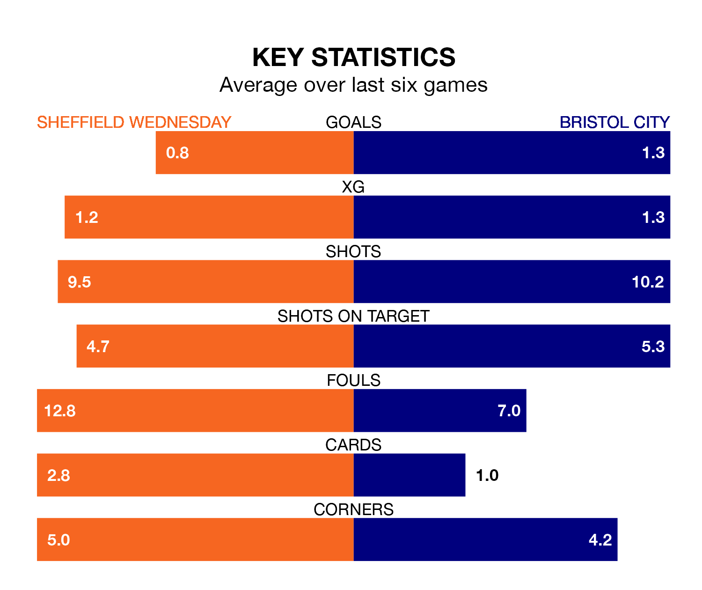

Struggling Sheffield Wednesday face Bristol City at Hillsborough on Saturday looking to build on a win in their last league outing.
After securing all three points with a 2-0 victory over Millwall on February 17, the Owls sit 23rd in EFL Championship.
They travel to play a City side 12th in the standings, who lost in their last match, 1-0 against Queens Park Rangers.
In the last 10 years, Wednesday and City have played each other on 13 occasions. Wednesday won six of them, City four, and they drew three times.
On average, the Owls scored 1.2 goals and the Robins 1.4 in those matches.
Their last meeting was on November 4, when City won 1-0 at home.
With 26 goals in 33 games so far this season, Wednesday are the league's joint-second-lowest scorers with 0.8 goals per game. And they are conceding more than average, letting in 52 goals at a rate of 1.6 per game.
City are also below average scorers, with 1.2 goals per game, compared to a league average of 1.4. They have conceded 1.1 goals per game.
The Owls are in mixed form in EFL Championship, with two wins and a draw from their last six games.
With two wins and two draws over that period, the Robins' form is slightly better – they have taken eight points from 18, compared to the hosts' seven.
Updated: 12:18 (UTC), 19/02/24